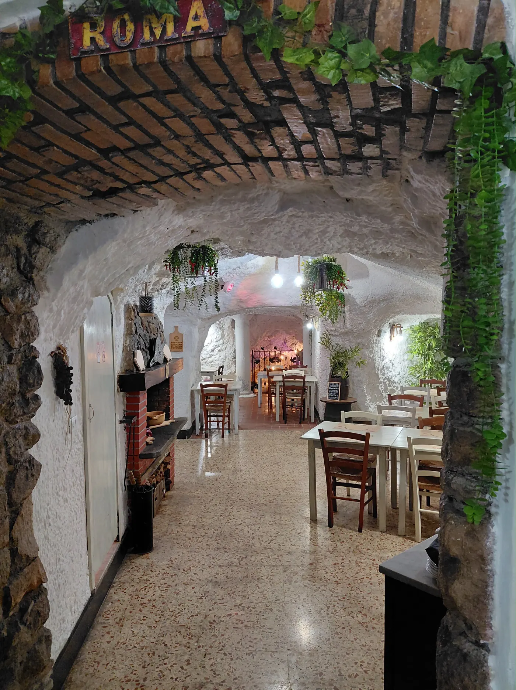
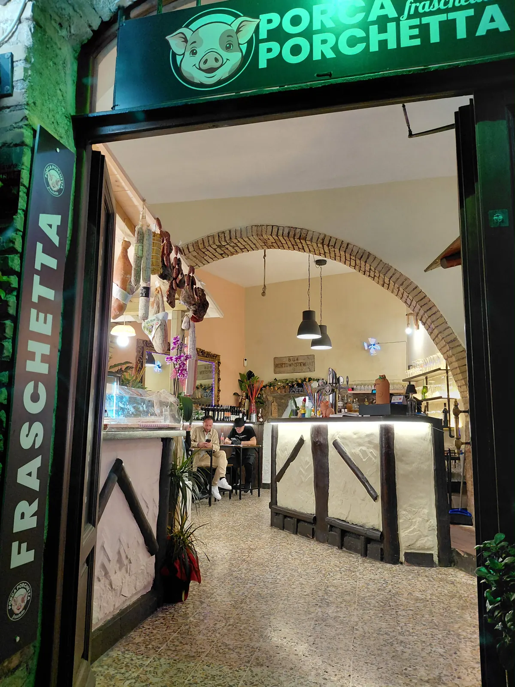
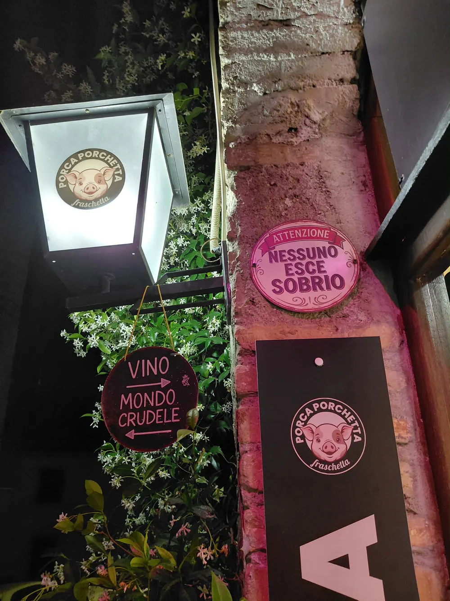
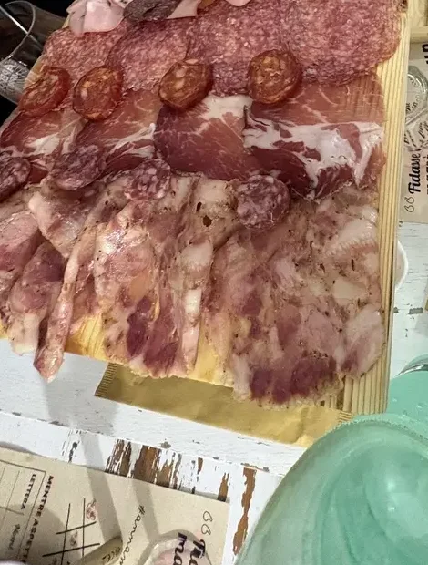
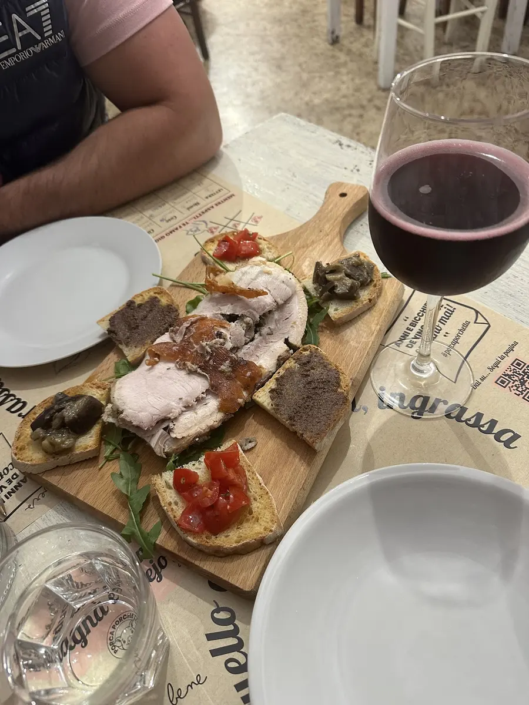

L'ingresso
Si entra dal vicolo, oltre il bancone con i salumi appesi. Via del Trivio 31, nel centro storico.
Anguillara Sabazia · Lago di Bracciano
Porchetta tagliata al momento, taglieri, panini e vino in caraffa. A cento metri dal lago di Bracciano.

Targa smaltata appesa nel vicolo del locale: Attenzione Nessuno esce sobrio
Una sala, il vino della casa, il cibo portato in tavola senza cerimonie. Qui la sala è una grotta scavata nel tufo: sessanta coperti sotto il centro storico. Il lunedì è chiuso.



Si entra dal vicolo, oltre il bancone con i salumi appesi. Via del Trivio 31, nel centro storico.
Il corridoio scende sotto le volte: pietra bianca, pavimento in terrazzo, tavoli di legno. Sessanta coperti in tutto.
D'estate il gelsomino arriva fino alla porta e le targhe smaltate restano accese nel vicolo. Si resta a tavola fino alle undici.
Targa smaltata appesa nel vicolo del locale: Vino Mondo crudele
Salumi e formaggi affettati al momento, porchetta calda, panini e piatti della tradizione. Il vino della casa si ordina al calice, al quarto, al mezzo litro o al litro.

I taglieri Dal taglierino per due al tagliere apericena, che sul menù è segnato come esagerato.

La porchetta Tagliata al momento: con il pane caldo, nei tacos o sul tagliere insieme al resto.

Ciavatta e ciavattone Due misure di panino: porchetta, salsiccia, trippa o polpette. Anche da portare via.
In carta sette bianchi e sette rossi, Frascati Superiore e Cesanese compresi. Lo spritz si ordina in caraffa, da tre, cinque o otto litri.
Menù e prezzi
Il ciavattone si prende anche da portare via. Dal vicolo al lungolago sono due minuti a piedi, giusto il tempo del tramonto su Bracciano.
Sessanta coperti, e nel fine settimana si riempiono. La conferma arriva via email in un minuto.
Gruppi oltre otto persone: 06 6549 5256